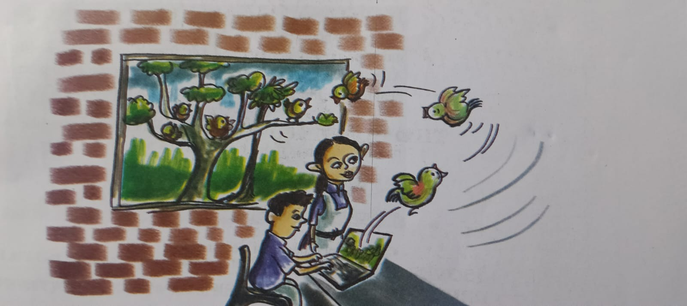

Walls have been used as canvases for communication since ancient times

Krita is a free software used for digital drawing and painting.Some of Krita's special features include a highly useful brush engine, layer management , and animation tools. It can be used on various operating systems, in cluding GNU/Linux, indows, and macOS.
* Click New File (Ctrl+N) under Start in the windows that appears when Krita is opened (a new file can also be created by File -New). * Specify in the windows the required width and height of the canvas. * Here we can use width and height propotional to the dimensions of the wall.